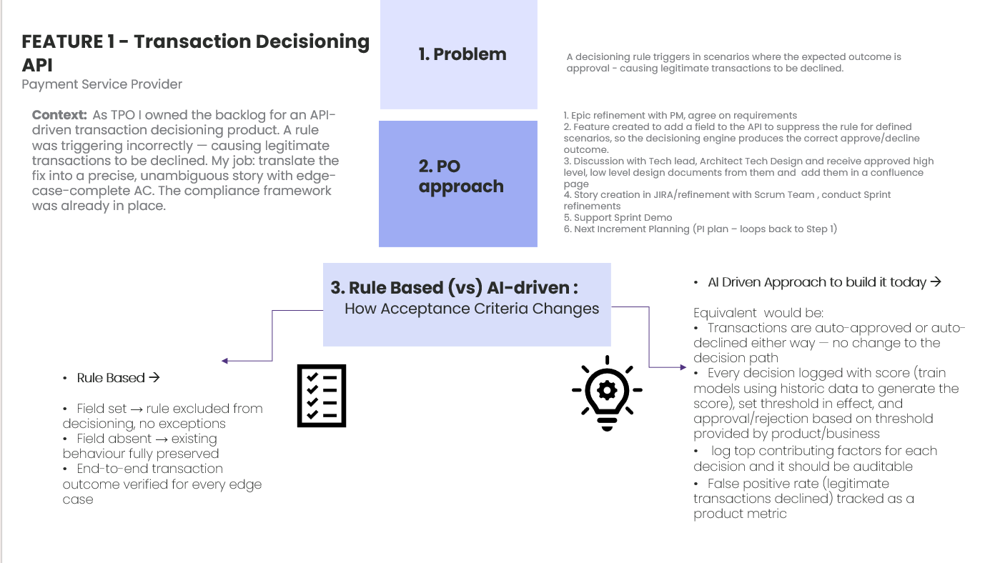

Transaction Decisioning API — Payment Rule Fix
Payment service provider · Real TPO work, from my time as Technical Product Owner
Overview
As Technical Product Owner for an API-driven transaction decisioning product, I owned the backlog for a fix to a mis-firing rule that was causing legitimate transactions to be declined. This case study covers how I turned that fix into a precise, edge-case-complete story and acceptance criteria — and how I'd approach the same problem with an AI-driven decisioning model today.
The Challenge
A decisioning rule was firing in scenarios where the correct outcome should have been approval, causing legitimate transactions to be declined. The compliance framework governing the decisioning engine was already in place — my job was to translate the fix into a precise, unambiguous story with acceptance criteria that covered every edge case, without introducing new risk into an already-regulated system.
Approach
I owned this end-to-end as Technical Product Owner, following the team's standard delivery cycle:
- Refined the epic with the PM and agreed the requirements
- Scoped a feature to add a field to the API that suppresses the rule for defined scenarios, so the decisioning engine produces the correct approve/decline outcome
- Worked with the tech lead and architect on high-level and low-level technical design, and got sign-off before documenting it in Confluence
- Wrote the story in JIRA and ran refinement with the Scrum team, including sprint refinements
- Supported the sprint demo
- Fed the outcome into the next Increment (PI) planning cycle
Screenshots

Rule-Based vs. AI-Driven: How Acceptance Criteria Changes
Since building this fix, I've thought through how the same problem would be approached with an AI-driven decisioning model — and how differently the acceptance criteria would need to be written.
Rule-based (what I shipped)
- Field set → rule excluded from decisioning, no exceptions
- Field absent → existing behaviour fully preserved
- End-to-end transaction outcome verified for every edge case
AI-driven (how I'd build it today)
- Transactions are auto-approved or auto-declined either way — no change to the decision path
- Every decision logged with a score (models trained on historic data to generate it), a threshold set by product/business, and approval or rejection applied based on that threshold
- Top contributing factors logged for each decision, and the whole thing auditable
- False positive rate (legitimate transactions declined) tracked as a product metric
Key Artefacts
- User story with edge-case-complete acceptance criteria
- High-level and low-level technical design documents (Confluence)
- JIRA story and sprint refinement notes
Outcome / Impact
Delivered a precise, edge-case-complete story and acceptance criteria for a rule fix in a live, regulated transaction decisioning system, with sign-off from tech lead and architecture before it reached the sprint. Demonstrates the acceptance-criteria discipline that kind of regulated environment demands, and how that same discipline extends into evaluating an AI-driven decisioning approach.
What I Learned
Working in a regulated decisioning system taught me that acceptance criteria are the real interface between product and compliance — every edge case has to be spelled out, because "obviously" isn't good enough when a rule change touches real transactions. Thinking through how I'd approach the same problem with an AI-driven model today reinforced that AI doesn't remove that discipline — it just moves it: instead of writing rule exceptions, you're defining what gets logged, what a threshold means, and who's accountable when the model is uncertain.